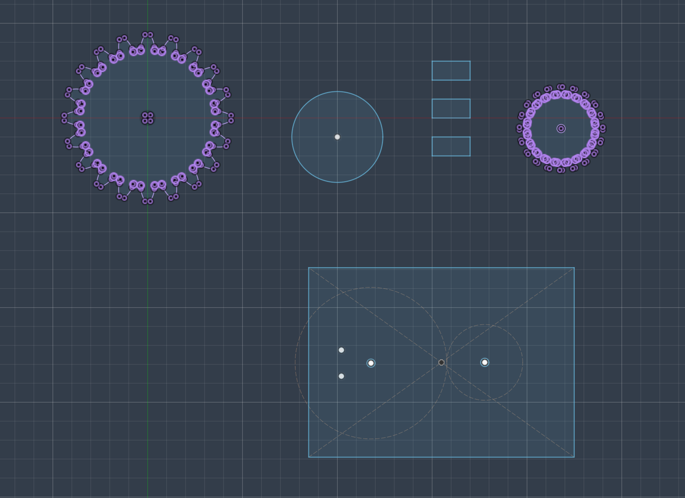
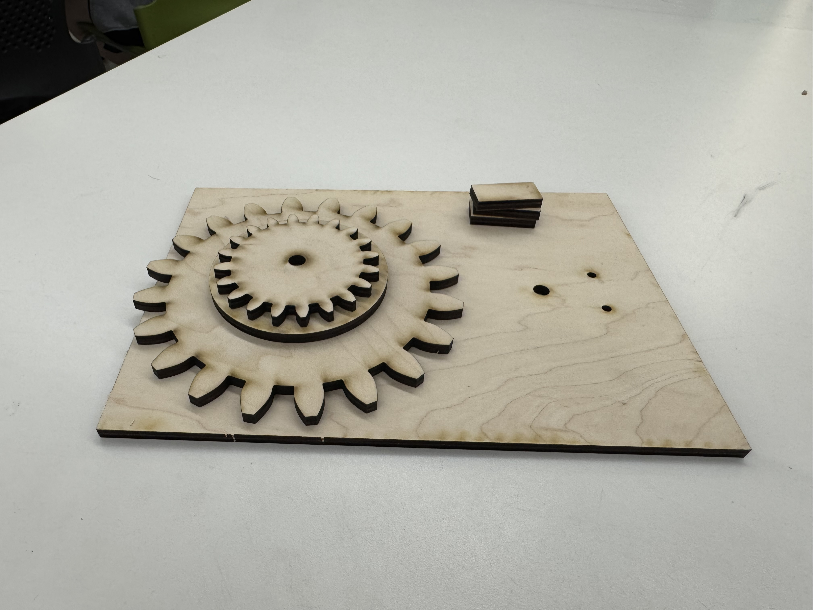

Week 3: Fabrication
This week our tasks were to create a kinematic sculpture and to solder pins into our microcontroller.
Soldering
This was my first time soldering so I was really exited. Unfortunately I got misguided by a peer and I soldered one side of the pins in the wrong direction. But thanks to my teacher I learned my mistake and was able to solder the other side properly.
Kinetic Structure
For my kinetic structure I wanted to make a showcase pillar that turns around itself. The idea was basic but it was my first time ever building with a robot so it was challenging but fun!

This were all my designs right before I headed to the laser cutter. I decided to use wood for this project because I wanted it to be as durable as possible.

The problem with my prints was that all of their scales were off and they were impossible to connect, so I had to find a way to make it work.

This is what I was able to do with my flawed prints.

This is what I was able to do with my flawed prints.
I put together my vision but the problem was it only looked like it was working but in actuality the difference in the teeth or the gears the machine got stuck and unfortunately did not work.
This week I learned how not to work with cogs and wheels, even if my project didn't work it made me learn a lot of important information that will help me throughout my digital fabrication journey so I am a little frustrated but still looking forward to use my newly aquired knowledge!